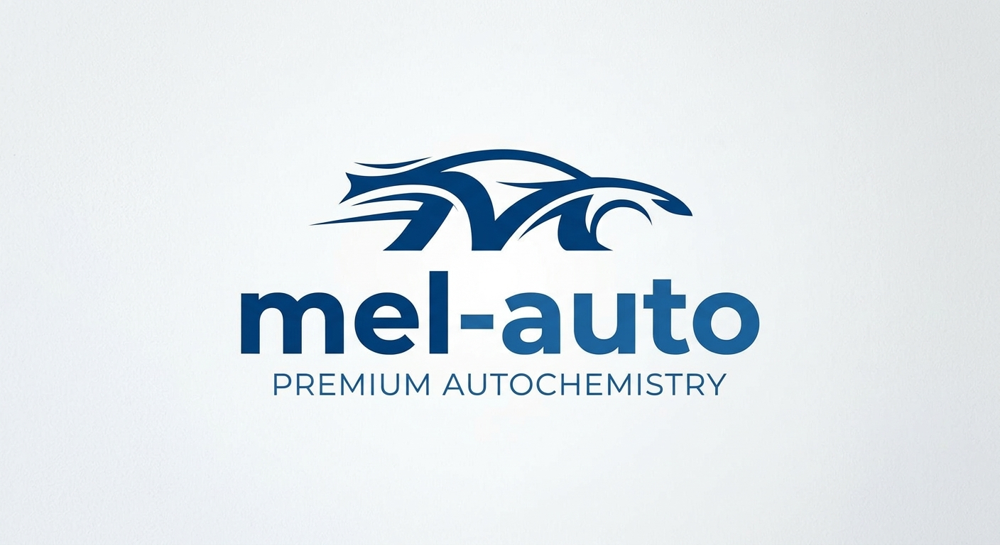

Ласкаво просимо до mel-auto!

Ваш надійний постачальник преміальної автохімії та засобів догляду за автомобілем.
1. Основні категорії товарів (Нумерований список)
- Очищувачі кузова та активна піна
- Засоби для догляду за салоном (шкіра, пластик, тканина)
- Поліролі та захисні керамічні покриття
2. Бестселери місяця (Маркований список)
- mel-auto Active Foam — Висококонцентрована рожева піна для безконтактного миття.
- mel-auto Leather Care — Кондиціонер для очищення та захисту шкіряних сидінь.
- mel-auto Hydro Gloss — Рідкий віск із гідрофобним ефектом та дзеркальним блиском.
3. Словник автохімії (Список визначень)
- Гідрофобність
-
Властивість захисного покриття відштовхувати воду та бруд, змушуючи краплі скочуватися з поверхні кузова. - Активна піна
-
Спеціальний концентрований лужний розчин, який розщеплює стійкий дорожній бруд без використання губки.